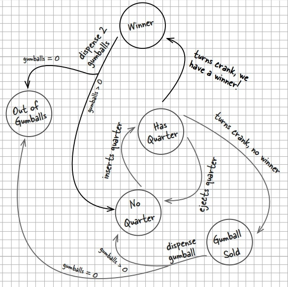

浅谈设计模式十三：状态模式(State)
Table of Contents
实例

实现如上运行的糖果机，基本的做法就是定义好每个状态，然后把每个状态转换的行为定义为一个函数方法来实现状态间的转换。
class GumballMachine { public: explicit GumballMachine(int cout); void insertQuarter(); void ejectQuarter(); void turnCrank(); void dispense(); private: const int SOLD_OUT = 0; const int NO_QUARTER = 1; const int HAS_QUARTER = 2; const int SOLD = 3; int state; int count; };
现在糖果机生产商想新添加一个幸运机制，添加一个 winner 状态，有1/10的概率成为Winner，免费获得一个糖果，状态机图如下：

在原有的代码上新添加这个状态，需要在每个转换函数里修改，以致很多处修改，容易产生错误。分析这个设计的缺陷：
- 状态转换不明显，一堆判断语句在每个转换函数里;
- 没有封装好变化部分和不变化部分，使得两者纠缠在一起;
- 进一步添加与修改容易产生bugs。
状态模式(State)
目的
允许一个对象当它的内部状态改变时改变它的行为。这个对象看起来改变了它的类。
实现
按照状态模式：
- 定义抽象状态接口，包含糖果机每个状态转换行为的方法;
- 根据接口为糖果机每个状态独立实现状态类；
- 糖果机摆脱大量的判断语句，把状态如何转换的功能由各个状态类独立实现。
如此把整个复杂的状态机整理的比较清晰，最后状态类图如下,代码实例在这里。

定义抽象状态接口
class State { public: virtual ~State() {} virtual void insertQuarter() = 0; virtual void ejectQuarter() = 0; virtual void turnCrank() = 0; virtual void dispense() = 0; virtual string toString() = 0; };
实现状态类
为糖果机每个状态独立实现状态类，这里 NoQuarterState 类为例如下，
NoQuarterState 类保存 GumballMachine 的实例，来实现设置糖果机状态的改变。
class NoQuarterState : public State { public: explicit NoQuarterState(GumballMachine *gumball_machine); virtual ~NoQuarterState(); virtual void insertQuarter(); virtual void ejectQuarter(); virtual void turnCrank(); virtual void dispense(); virtual string toString(); private: GumballMachine *gumball_machine_; }; void NoQuarterState::insertQuarter() { cout << "You inserted a quarter" << endl; gumball_machine_->setState(gumball_machine_->has_quarter_state()); } void NoQuarterState::ejectQuarter() { cout << "You haven't inserted a quarter" << endl; } void NoQuarterState::turnCrank() { cout << "You turned, but there's no quarter" << endl; } void NoQuarterState::dispense() { cout << "You need to pay first" << endl; } string NoQuarterState::toString() { return "waiting for quarter"; }
重作 GumballMachine 类
糖果机摆脱大量的判断语句，把状态如何转换的功能由各个状态类独立实现，整个类显得很清晰：
GumballMachine::GumballMachine(int number_gumballs) : count_(number_gumballs), state_(sold_out_state_) { sold_out_state_ = new SoldOutState(this); no_quarter_state_ = new NoQuarterState(this); has_quarter_state_ = new HasQuarterState(this); sold_state_ = new SoldState(this); if (count_ > 0) { state_ = no_quarter_state_; } } void GumballMachine::insertQuarter() { state_->insertQuarter(); } void GumballMachine::ejectQuarter() { state_->ejectQuarter(); } void GumballMachine::turnCrank() { state_->turnCrank(); state_->dispense(); } void GumballMachine::releaseBall() { cout << "A gumball comes rolling out the slot..." << endl; if (count_ != 0) { count_--; } } void GumballMachine::refill(int count) { count_ = count; state_ = no_quarter_state_; }
总结
状态模式(State)结构

组成
- 场景类（Context）
- 定义用户感兴趣的接口。
- 保存一个定义当前状态的具体状态（ConcreteState）子类的实例。
- 抽象状态类(State) 定义接口来封装与场景类（Context）的每个特殊状态相关的行为。
- 具体状态子类（ConcreteState subclasses）每个子类实现与场景类（Context）每个状态相关的行为。
应用场景
- 一个对象的行为依赖于它的状态，并且再运行时它必须依赖于这个状态来改变它的行为。
- 代码操作中拥有大量的依赖于对象状态的条件语句。这个状态通常被一个多多个枚举定值表示。时常，许多操作包含这同样的条件分支结构。状态模式将每个分支放入一个独立的类中。这让你可以把对象的状态当成每个自己负责的对象，而且这些对象能互相独立。